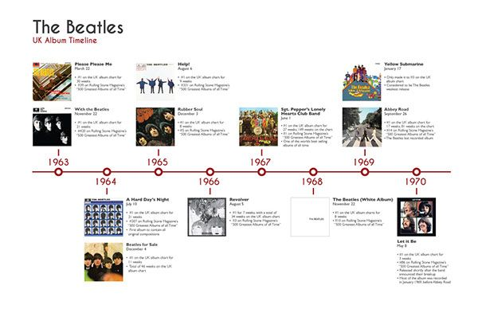

Ранние годы (1956—1960)
Группа "The Beatles" начала свою историю в Ливерпуле, где Джон Леннон в 1956 году собрал первую группу под названием «The Blackjacks». Вскоре к нему присоединился Пол Маккартни, а затем — Джордж Харрисон. Они выступали в клубах Ливерпуля и Гамбурга, что помогло им отточить свои навыки и завоевать преданных поклонников.
Становление популярности (1960—1964)
В 1962 году "The Beatles" подписали контракт с лейблом EMI и выпустили свой первый сингл "Love Me Do". В 1964 году группа совершила прорыв на американский рынок, выступив на шоу Эда Салливана, что стало началом волны "битломании".
Музыкальные эксперименты (1965—1967)
Альбомы *Rubber Soul* и *Revolver* продемонстрировали стремление группы к новаторству. В 1967 году вышел *Sgt. Pepper’s Lonely Hearts Club Band*, который стал символом психоделической эпохи.
Культурное влияние (1967—1970)
"The Beatles" стали не только музыкальными кумирами, но и культурными иконами. Их стиль жизни и идеи мира повлияли на молодежную культуру 1960-х годов.
Развод и наследие (1970—настоящее время)
Группа официально распалась в 1970 году. Каждый из участников продолжил успешные сольные карьеры. Несмотря на разногласия, их музыка продолжает вдохновлять миллионы людей.
Временная линия
Дискография
1963
- Please Please Me
- With The Beatles
1964
- A Hard Day's Night
- Beatles for Sale
1965
- Help!
- Rubber Soul
1966
- Revolver
1967
- Sgt. Pepper's Lonely Hearts Club Band
- Magical Mystery Tour
1968
- The Beatles (The White Album)
1969
- Yellow Submarine
- Abbey Road
1970
- Let It Be